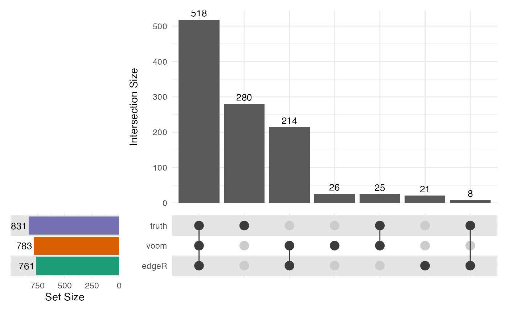
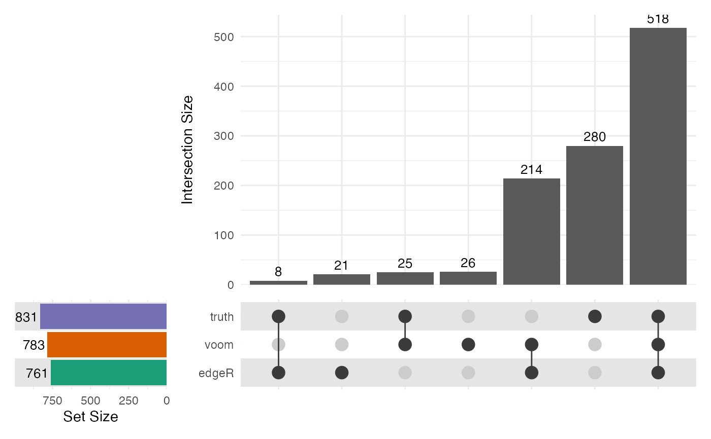
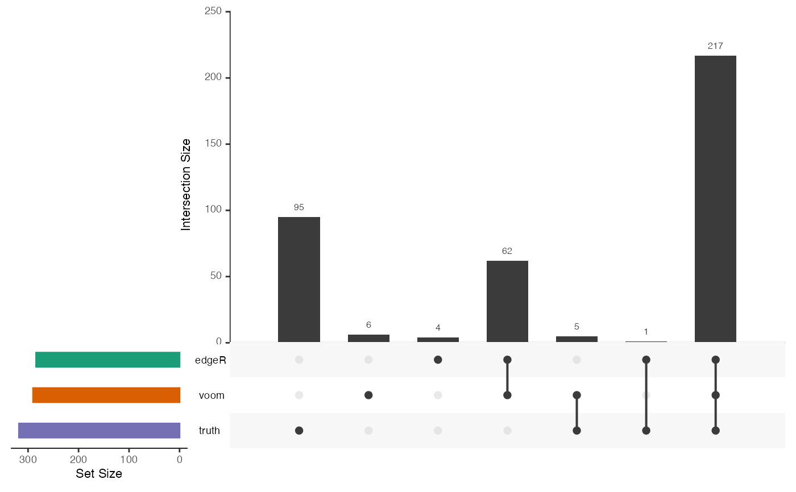

Generate UpSet plots showing the overlaps among sets of significant feature
for a given adjusted p-value threshold (see thr_venn argument of
calculate_performance). Optionally, the truth can be included
as a "perfect" method. Note that if the results are stratified, only one
category at a time can be displayed.
Usage
plot_upset(
cobraplot,
stratum = NULL,
nsets = NULL,
nintersects = NULL,
sets.bar.color = NULL,
...
)Arguments
- cobraplot
A
COBRAPlotobject.- stratum
If results are stratified, the category to plot results for. Can be numeric or categorical (the name of the category).
- nsets
The number of methods to include. By default, it is determined automatically from the
cobraplotobject.- nintersects
The number of set intersections to display. By default, it is determined automatically from the
cobraplotobject.- sets.bar.color
The colors to use for the bars in the UpSet plot. By default, they are extracted from the
plotcolorsslot of thecobraplotobject.- ...
Additional arguments to
UpSetR::upset.
References
Lex and Gehlenborg (2014): Points of view: Sets and intersections. Nature Methods 11, 779.
Lex et al (2014): UpSet: Visualization of intersecting sets. IEEE Transactions on Visualization and Computer Graphics 20(12), 1983-1992.
Examples
data(cobradata_example)
cobraperf <- calculate_performance(cobradata_example,
binary_truth = "status",
aspects = "overlap")
#> Warning: Object doesn't have a slot sval. Please run update_cobradata(). For consistency, I will return an empty data.frame
cobraplot <- prepare_data_for_plot(cobraperf, colorscheme = "Dark2",
incltruth = TRUE)
plot_upset(cobraplot)
#> Warning: `aes_string()` was deprecated in ggplot2 3.0.0.
#> ℹ Please use tidy evaluation idioms with `aes()`.
#> ℹ See also `vignette("ggplot2-in-packages")` for more information.
#> ℹ The deprecated feature was likely used in the UpSetR package.
#> Please report the issue to the authors.
#> Warning: Using `size` aesthetic for lines was deprecated in ggplot2 3.4.0.
#> ℹ Please use `linewidth` instead.
#> ℹ The deprecated feature was likely used in the UpSetR package.
#> Please report the issue to the authors.
#> Warning: The `size` argument of `element_line()` is deprecated as of ggplot2 3.4.0.
#> ℹ Please use the `linewidth` argument instead.
#> ℹ The deprecated feature was likely used in the UpSetR package.
#> Please report the issue to the authors.

plot_upset(cobraplot, order.by = "freq", decreasing = TRUE)

cobraperf <- calculate_performance(cobradata_example,
binary_truth = "status",
aspects = "overlap",
splv = "expr_cat")
#> Warning: Object doesn't have a slot sval. Please run update_cobradata(). For consistency, I will return an empty data.frame
cobraplot <- prepare_data_for_plot(cobraperf, colorscheme = "Dark2",
incltruth = TRUE)
plot_upset(cobraplot, stratum = "[2.85e+00,1.45e+01)")
